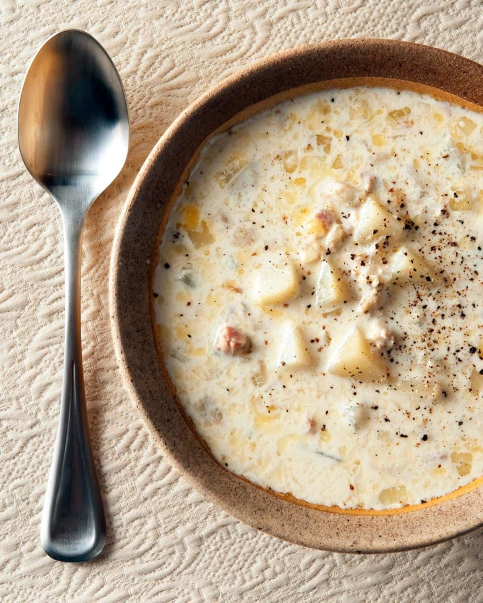

Clam Chowder

Ingredients
- 4 center cut bacon strips
- 2 celery ribs
- 1 large onion, chopped
- 1 garlic clove, minced
- 3 small potatoes, peeled and cubed
- 1 cup (236.588 ml) water
- 8 ounces (29.57 ml) clam juice
- 3 teaspoons (14.78 ml) educed-sodium chicken bouillon granules
- 2 teaspoons (9.85 ml) dried thyme
- 0.75 teaspoons (3.7 ml) white pepper
- 0.3334(1/3)cups (1.642 ml) all-purpose flour
- 2 cups (473.1762 ml) fat-free half-and-half, divided
- 13 ounces (384.456 ml) hopped clams, undrained
Steps
- In a Dutch oven, cook bacon over medium heat until crisp. Remove to paper towels to drain; set aside.
Saute celery and onion in the drippings until tender. Add garlic; cook 1 minute longer.
Stir in the potatoes, water, clam juice, bouillon, pepper and thyme. Bring to a boil. Reduce heat;
simmer, uncovered, until potatoes are tender, 15-20 minutes.
- In a small bowl, combine flour and 1 cup half-and-half until smooth. Gradually stir into soup. Bring to a boil;
cook and stir until thickened, 1-2 minutes.
- Stir in clams and remaining half-and-half; heat through (do not boil). Crumble the cooked bacon; sprinkle over each serving.
Suggeted sides